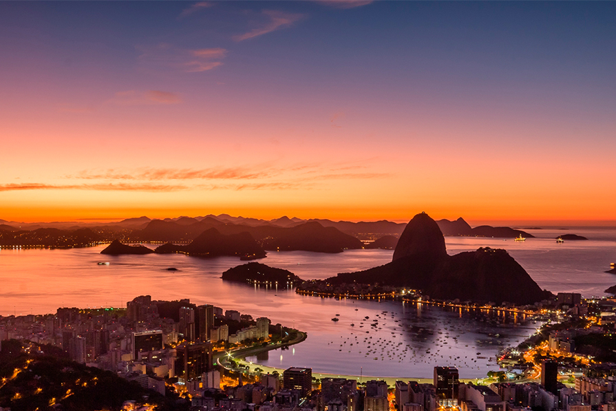
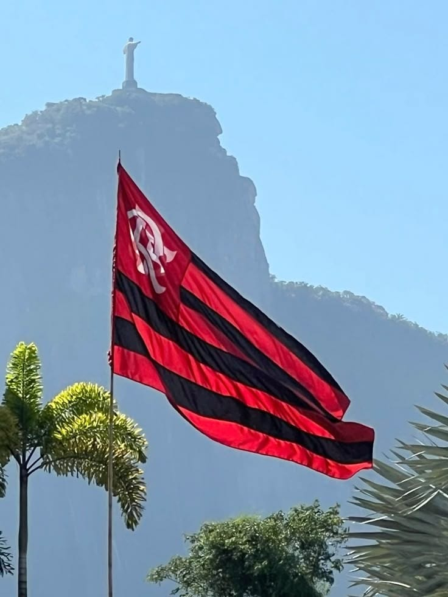
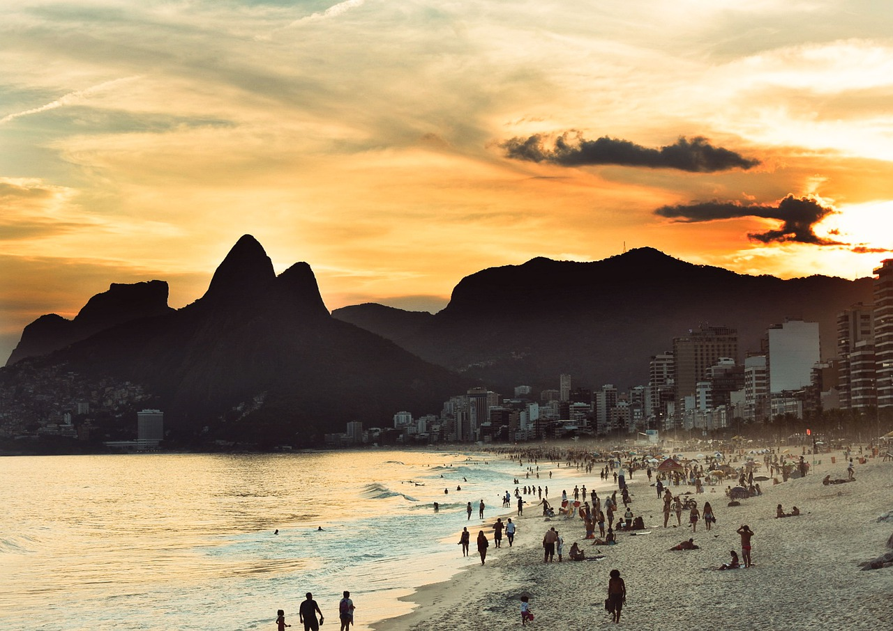
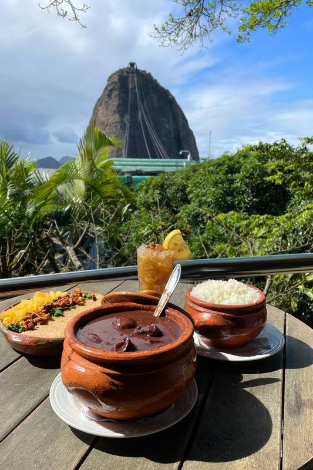
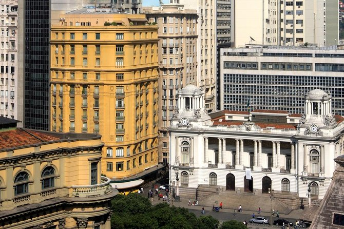

Por que visitar o Rio de Janeiro? A Cidade Maravilhosa te espera!
O Rio de Janeiro é um dos destinos turísticos mais icônicos do mundo.
Uma cidade onde a natureza exuberante se encontra com a cultura vibrante,
a história colonial e o estilo de vida descontraído.
Conheça os motivos pelos quais o Rio é parada obrigatória em qualquer roteiro pelo Brasil:
Paisagens de tirar o fôlego
O Rio oferece um espetáculo único, em que a cidade se molda entre montanhas cobertas de Mata Atlântica,
praias extensas e lagoas serenas.
Poucos lugares no mundo apresentam essa harmonia tão marcante entre o urbano e o natural.
A cidade proporciona vistas impressionantes em diferentes ângulos: do alto do Cristo Redentor,
você enxerga toda a grandiosidade da cidade;
do Pão de Açúcar, vê-se a Baía de Guanabara se estendendo sob um céu quase sempre azul;
e no pôr do sol do Arpoador, a natureza dá um show
diário que emociona moradores e visitantes.

Cultura e alegria sem fim
O Rio é um verdadeiro berço da cultura brasileira.
Do samba às escolas de samba, da Lapa ao Theatro Municipal.
É aqui que acontece o maior espetáculo da Terra: o Carnaval carioca, com seus desfiles deslumbrantes,
blocos de rua e energia contagiante.
o Rio é arte, música, expressão e, o mais importante, é Flamengo.

Praias famosas no mundo inteiro
Copacabana, Ipanema, Leblon, Barra da Tijuca...
As praias cariocas são perfeitas para relaxar, praticar esportes ou
apenas observar o vai-e-vem típico dos cariocas.
Cada uma tem sua vibe, mas todas oferecem o melhor do clima tropical.

Gastronomia com sabor carioca
A comida no Rio é diversa como a cidade.
Você encontra de tudo, da tradicional feijoada às comidas de boteco,
do açaí gelado ao mate com biscoito Globo nas areias da praia.
E claro, excelentes bares e restaurantes com vista para o mar.

História e arquitetura
O centro histórico guarda relíquias do período colonial, do império e da república.
Igrejas antigas, praças, museus e palácios contam a história do Brasil de forma viva e acessível.
Um passeio a pé revela a alma antiga da cidade.

Pontos Turísticos Imperdíveis no Rio de Janeiro
Cristo Redentor: Um dos maiores símbolos do Brasil,
com vista panorâmica de 360° da cidade.